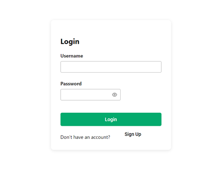

Ministry of Industry and Technology
Software Development Intern
Summer 2023
Ankara, Turkey
1 Months
During my internship at the Ministry of Industry and Technology, I had the opportunity to work on real-world projects and gain valuable experience in software development. I was part of a team responsible for developing and maintaining internal applications used by various departments within the ministry.
My main responsibilities and achievements included:
- Developed RESTful APIs using Spring Boot, ensuring efficient data flow between frontend and backend systems
- Created user-friendly interfaces with React Prime, focusing on accessibility and responsive design
- Conducted comprehensive testing to ensure the reliability and performance of developed features
- Worked with MSSQL databases for data management and optimization
- Collaborated with cross-functional teams to understand requirements and deliver solutions
- Participated in code reviews and implemented feedback to improve code quality
This internship provided me with significant experience in full-stack web application development and allowed me to apply my academic knowledge in a professional setting. I gained insights into government IT infrastructure and learned how technology solutions are implemented in public sector organizations.
